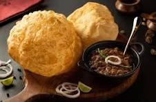
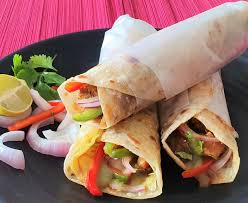
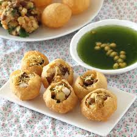
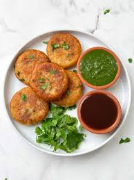

Savor the flavors of Chandigarh's famous chole bhature at this popular street food stall in Sector 14. The perfectly puffed bhature is served with a spicy and tangy chole made with tender chickpeas, onions, and a blend of aromatic spices. Don't forget to add a dollop of butter and a sprinkle of chutney for an extra burst of flavor!
Recommendation: Try it with a side of lassi or chaas to cool down the spiciness.
Indulge in the flavorful kathi rolls at this iconic street food joint in Sector 22. Made with tender lamb or vegetables, wrapped in a crispy egg roll and served with a side of spicy chutney, these rolls are a must-try. The combination of flavors and textures will leave you wanting more. Pair it with a side of mint chutney for a truly satisfying meal.
Recommendation: Try with extra chutney and a side of mint chutney for a truly authentic experience.
Experience the explosion of flavors in every bite of pani puri at this popular street food stall in Elante Mall. Crispy puris filled with a mix of flavored water, tamarind chutney, chili powder, and a variety of chutneys will leave you wanting more. Don't forget to ask for extra chutney and a sprinkle of sev for added crunch and flavor.
Recommendation: Try the spicy version for an extra kick!
Savor the crispy exterior and fluffy interior of aloo tikki at this street food stall in Sector 35. Made with boiled potatoes, peas, and a blend of spices, the tikki is served with a dollop of yogurt, chutney, and a sprinkle of chaat masala. Don't forget to try it with a side of hot chai for a truly satisfying snack.
Recommendation: Ask for extra chutney and a sprinkle of cilantro for added flavor.
